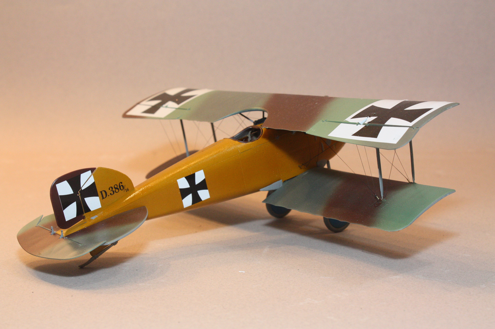
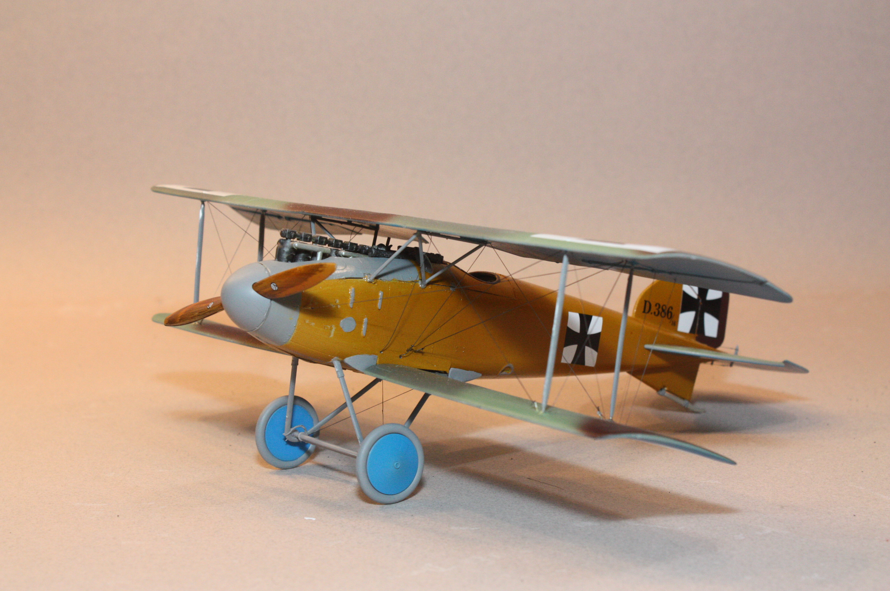
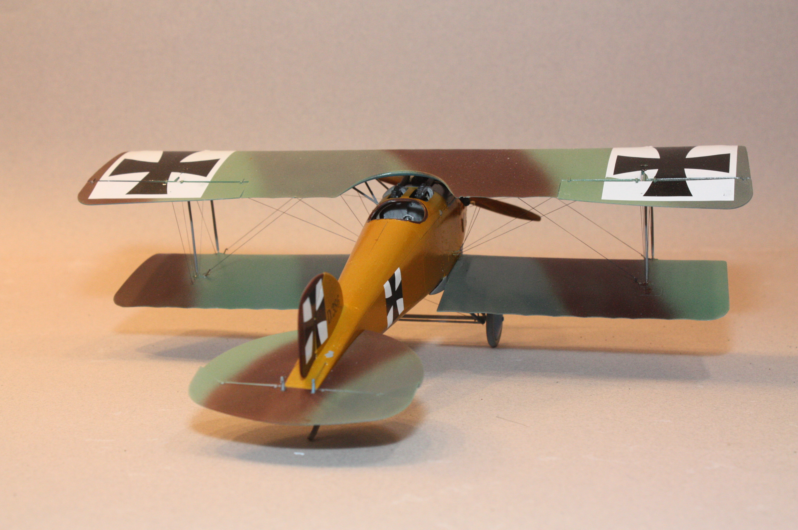

| Kit | Albatros D.II "Boelcke" | ||
|---|---|---|---|
| Manufacturer | Encore | Scale | 1/32 |
| Kit Number | 32001 | Price | $35 |
| Subject Modeled | Hauptman Boelcke, Jasta 2, October 1916 | ||
| Start Date | |||
| Complete Date | |||
This build represents a personal victory of sorts after a run of frustration at my modeling bench. I had attempted an Eduard Sopwith Camel in 48th scale, but could never get the cabanes to stay on the kit, let alone line up, and I ended up launching that kit into the nearest wall. I then made an attempt at the old Revell Sopwith Camel in 28th scale, and had some similar issues with the wings and cabanes - and that kit ended up under a hammer. I spent a bit of time doing some research on how to actually build a World War I-era bi-plane. What I found was something called a "bi-plane jig" that apparently was a big help in building these double-winged airplanes. I found a guy in Czechoslovakia who had made jigs to sell, and I bought one from this guy. It wasn't terribly expensive as I recall. Once it came in, what I had was essentially a sturdy plastic stand with a couple of arms upon which to rest a model while freeing one's hands to work on other areas. The jig worked like a charm! I was able to properly align the upper wing once I installed the cabanes, and this jig also helped immensely in running EZ Line for all the rigging. I also used oil paint to simulate the wood grain on the propellor.
  